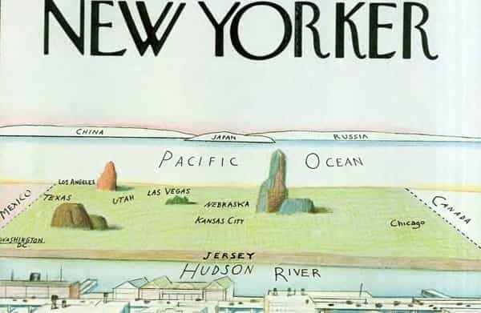

André is a young European who left his decaying country in 2012 for greener pastures. He enjoys exploring subterranean places, reading about a host of interconnected topics, and yearns for Tradition.


Historically, cities have been double-edged swords. They were trade nodes and centres of innovations, which allowed them to be culturally interesting, but they also were on the vanguard of degeneracy and arrogance. Urbanites have typically grown a more intellectual mindset than those on the countryside, but they turned more dependent and all too often less masculine.
All in all, in the big cities, the cons have definitely moved beyond the pros: enormous living costs, lack of space, soulless “modern” (post-1950s) buildings, overvalued and promiscuous women, plus the roaming thugs supported by the State. No wonder even the bourgeois bohemians are trying to sneak back to the land.
For most of us, urban living seems natural. If you’re a gen X or Millennial Westerner, chances are you were born in a city, perhaps a metropolis. Yet this urban living is quite a recent thing. Before the first Industrial Revolution, the majority of people worked the land. They raised their own crops, grew their own animals, sometimes sold this or that, but most families were independent and lived surrounded by natural space.
There were cities, of course. However, these tended to be small compared with the cities of now. Cities were commercial outposts where one could also find meeting places. They didn’t produce food, and few craftsmen needed to live there. Most cities were local centres, and even the big-name ones looked small from our perspective: if you go to Paris, France, you’ll notice how small it is compared to New York, and yet up to the seventeenth century most of Paris was centred around the Seine islands while a lot of current Paris was a countryside. Now suburban cities were small localities.
Before the big modern population increase, lots of men had to toil the land to make their food. This was physically demanding, and this had several advantages: men were needed to do the hardest parts, they depended more on their own work than on a skewed market, they breathed fresh air, had enough space to raise various children, and could eat cheaper meat than we do. Female hypergamy was also kept in check as women needed men and families to support them.
The latter advantage held true during most of the Middle Ages, when free space and a small population allowed for raising numerous cattle. Only when the population increased did space started to lack. Then, many pastures were converted into fields, and as more and more people had to share the space, the quantity of meat plummeted. Before the industrialization, free men ate organic meat daily—after it, many of them had to eat potato soups instead.
Cities grew well beyond their own regions thanks to various modern phenomena. Globalization and modern trade was one of them: ports became of paramount importance. Centralization was another. The industrial revolution and subsequent building of numerous factories was another. The cities grew thanks to globalization and technology, but by doing so, they started to be rather related to other big cities than to their own surroundings. The merchants, the fashionable, rather mingled together—and worked synergically—than with the “retarded” countrysiders. Globalization is a story of cities seceding from their countries and exploiting them. Once fashionable industry workers were part of that process.
No matter how big they are, most big cities are too small for real men. They tend to sterilize people and must constantly attract newcomers for maintaining themselves. In a nutshell, big cities have long fostered various negative traits:
Traditional families are made of people who know they are links inside a glorious chain that may have existed for centuries. When you’re living in a rented flat, with no sense of either geographical, cultural, or racial identity, you’re not part of a chain but an atom who bounces along numberless other atoms. Uprooting makes people more vulnerable to forgetting who they are and more prone to follow.
Remember Communism? When peasants knew nothing good would come out of the State seizing their lands, urban proles—who often had close peasant ancestry—would fall for demagoguery and believe in suppressing private property. More recently, feminist women have always been spoiled urban bourgeois suffering from ennui or anti-Western hatred.
When you live in a city, you are never be as independent as a landowner is. You owe your money, your food, your place to others. And when said others are at best sheeple who follow political correctness out of fear, at worst militant SJWs, anti-white minoritarians, big companies… you are at their mercy. Instead of local solidarity and independence, you’re just another follower, lost into the mass unless the SJWs decide you’ll be their next target.

In the 19th century, urban proles had no interest in saving their land-toiling peers from a cutting throat competition. They were as interested as the factory owners in a more flexible global trade, which allowed them to have cheaper food, at the cost of a debilitated national agriculture.
Today, we’re witnessing the same phenomena: many urbanites are OK with globalism because they enjoy having the world markets at their feet, or so they feel, whereas their own people roam in unemployment. Allowing the cities to grow a lot made them secede from those who always fed them and egoistically benefit from global trade.
In a big city, space is expensive. In a glamorous or simply secure neighbourhood, space is very expensive. If you’re living there, even if you own your apartment, chances are you don’t have the space to rise more than one or two children. Add careerism into the mix and all the incentives point towards not having any child.
This phenomena is much older than we often believe: as soon as 1762, philosopher Jean-Jacques Rousseau complained of big cities where “women, living licentiously, bear no children.” 160 years later, Lothrop Stoddard warned of the “dysgenic” effect of cities where the “upper classes” and higher IQs focused on career instead of children and had to be “continually enriched by good new blood.” Now, many millennials are forced to share their already small apartments or dwell in a studio flat, places too small to create any children.
Long-time propaganda made us all believe that cities were better, wealthier, more cultivated, and glamorous. This has attracted not only men looking for employment, but also hypergamous women.
Today, many administrations hire more females than males. Many universities have more female students. And the same is true for MSM. When most middle-class men are pushed outwards, far into suburbia or second-tier cities, and forced to commute, many women will pay half of their wage for their overpriced rent while looking for alpha males and sugar daddies.
As a result of civil servants and wealthy industrials mingling together, both have been blending for decades, resulting in revolving doors institutions, “too big to fail”, one-track thinking and shady deals from a urban microcosm that owns both public and private power while despising everyone else.
Feminism, LGBTism, anti-whiteism and all other shades of degeneracy have sprung from the cities. People who come from the countryside and get a taste of the city, if they manage to secure a place for themselves, start adopting the city culture, which translates into more partying, despising their own place of birth, careerism, sluttiness, and so on.
Admittedly, cities often allowed for more opportunities than the countryside. A city is always bustling with activity and those who chase girls tend to look there. However, big cities have become way more geared towards the wealthy globalists, their bourgeois bohemian and minority pet projects, and their whores, thus excluding the normal people from a decent chance.
The increased social mobility of last decades has also led to more “social stratification”, something both Stoddard and Murray’s more recent The Bell Curve notice. Which means that high IQs mate with high IQs, the wealthy attract beautiful women, and capital attracts capital.
Now who owns most capital? A soulless, traitorous elite, mostly. And when “social stratification” happened, talented individuals from the countryside rushed to the cities, thus depleting both the “lower social classes” (as both authors would say) and the countryside from their more able before turning them into sterile, degenerated virtue-signalers.

But now there is something new. Something neither Stoddard nor Murray, for most of his life, have known. Upon both cities and countryside, the Internet came. With the Internet came the ability to communicate on a much freer way and freelance work. Working from any place has never been that easy whereas the cities have thoroughly decayed. Even if you’re rather skilled with your hands or enjoy working onsite, local economies are developing.
Millennials are leaving the crowded, dangerous, degenerated metropolises and can make a living from a cheaper place or even country. This is especially good for middle-sized cities. There, one still enjoys the perks of urban living while having a decent space to live in and stacking money off. Middle-sized cities also have plenty of gyms, so, if you’re bulking on a budget, it will be easier than in Metropolis.
Getting off the vampire cities allow us to have the wealth, space, and sometimes independence we need to grow families and tribe. This is how we will make the West great again.
Read Next: How White Flight Can Be Reversed